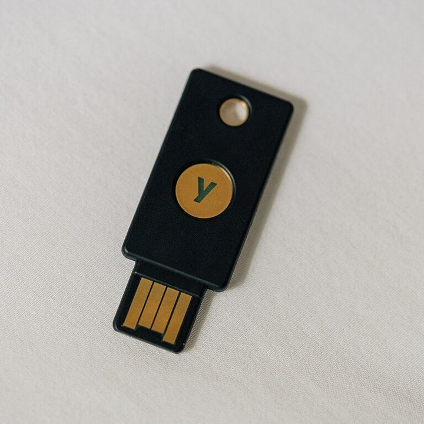
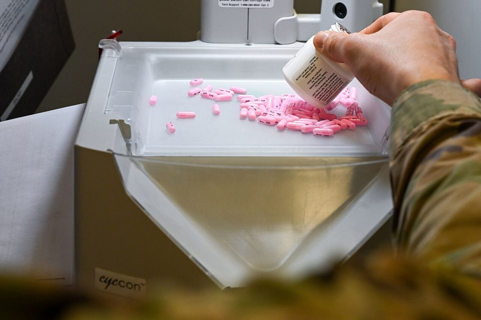

Chapter 9 · Cybersecurity
Cybersecurity: The Missing Second Step That Stopped American Healthcare
In February 2024 one login without a second security step let attackers into the company that processes about a third of all United States medical claims. Within hours, hospitals could not get paid and pharmacies could not confirm prescriptions. This chapter is about why the damage was a business problem long before it was a data problem.
Wanna go analog?or save it as a PDF; the navigation drops out
Most Americans had never heard of Change Healthcare before February 2024. Then, for weeks, pharmacies struggled to confirm coverage and doctors' offices could not get paid, all because of one company most of them had never chosen to depend on.
By the end of this chapter you should be able to:
- Explain the three properties security protects (confidentiality, integrity, availability) and why availability comes first in a breach.
- Describe ransomware and double extortion, and explain why paying does not solve the problem.
- Read an attack as a kill chain and name the ordinary controls (MFA, least privilege, segmentation, backups) that break it.
- Explain concentration risk and third-party risk, and why a breach at a supplier is your breach.
- Say who bears the cost of a security failure, and why most of it sits off the company's books.
1What security actually protects
Think about the last time an app you depend on stopped working. Maybe your bank's site was down on payday, or the campus registration system froze the morning classes opened. Nothing was stolen. You just could not do the thing you needed to do. Hold on to that feeling, because it is the center of this chapter.
Every chapter so far has assumed the system works. This one is about what happens when somebody deliberately stops it. The first idea to fix is that security is not something that happens only to computers. It is a property of all five components at once, and the weakest one decides the outcome:
- Hardware can be locked up or taken offline.
- Software carries the flaw or the missing setting that lets someone in.
- Data is what gets copied out.
- Networks are how an intruder moves from the one machine they reached to the ones they wanted.
- People are, in almost every incident you will read about, both the way in and the only reason anyone notices.
1.1 The three things security protects
Ask what an attack actually takes, and the answer is always one of three properties of information. Security people call the set the CIA triad. It has nothing to do with the spy agency; the letters stand for the three properties:
- Confidentiality: only the right people can read it. For example, a stolen laptop full of customer Social Security numbers is a confidentiality failure.
- Integrity: nobody can change it without being noticed. For example, an attacker who quietly changes a supplier's bank account number, so the next payment goes to them, has broken integrity.
- Availability: the people who need it can reach it when they need it. For example, a hospital whose scheduling system is locked has lost availability, even if not one record leaves the building.
Older breaches were mostly confidentiality failures: data read by the wrong people. Today's most common attack, ransomware, is mainly an availability attack. A hospital whose billing system is locked by an attacker has lost availability just as completely as if the building had flooded. That is why security stopped being only an IT topic and became a boardroom one. When you analyze any incident, name which of the three broke first, because the damage and the defense differ for each.
Five incidents. Say which of the three properties failed first, before you check.
Confidentiality: the wrong people can see it. Integrity: it was altered without detection. Availability: the people who need it cannot get to it. Most incidents eventually hit more than one; name the first.
1.2 Ransomware as a business
Ransomware is malicious software that locks an organization's data, usually by encrypting it, and demands payment for the key. Modern ransomware adds a second threat called double extortion. The attackers copy the data out first, so even a victim with perfect backups faces a second demand: pay, or we publish what we took.
The most important thing to understand about ransomware is that it is an industry, not a prank. Many groups run what is called ransomware-as-a-service. A core team builds the malware and rents it to partners, called affiliates, who carry out the attacks and split the money. It has revenue models, help desks for victims, and, like any business, partners who cheat each other.
That last point matters when a victim decides whether to pay. A payment buys a promise, such as “we will delete your data,” from people whose business is breaking promises. Nothing makes that promise enforceable. Section 4 shows exactly what one company's payment bought.
2How attacks work, and how defense works
Attacks are not single events. They are sequences, and that is good news, because a sequence can be broken at any point. This section starts at the front door and works inward, then steps back to ask what counts as your system in the first place.
2.1 Passwords, and the second step
Most attacks do not begin with clever code. They begin with a real username and password that somebody stole. Stolen passwords are cheap and everywhere. They come from phishing emails, from old breaches at other sites, and from people who reuse the same password, and they are sold in bulk on criminal markets.
Multi-factor authentication, or MFA, makes a stolen password useless on its own. It asks for more than one kind of proof before letting someone in:
- Something you know, such as a password.
- Something you have, such as a code sent to your phone, or a small physical key like the one in the photo.
- Something you are, such as a fingerprint or face scan.

Photograph: Tony Webster, via Wikimedia Commons, CC BY 2.0.
MFA is not exotic, expensive, or new. It is one of the highest-value controls most organizations can turn on, and you probably already use it for your university or bank account. The main case of this chapter turns on one login page that did not ask for it.
2.2 The kill chain, and where to break it
Security analysts describe an intrusion as a kill chain: a series of stages the attacker has to complete, in order. You do not need to memorize the stages. You need to see that there are stages, because each one is a place to stop the attack. In plain terms, an attacker has to:
- Get in. For example, log in with a stolen password.
- Move around. Spread from the first machine to the ones holding valuable data. This is called lateral movement, and it often takes days or weeks.
- Take or lock the data. Copy it out, encrypt it, or both.
The attacker has to win at every stage. The defender only has to win at one. So defenders stack ordinary controls in layers, each one assuming the one before it might fail:
- MFA stops most stolen-password logins at the door.
- Least privilege means every account gets only the access its job needs. For example, a receptionist's login cannot reach the payroll system, so a stolen receptionist password is worth very little.
- Network segmentation divides systems into fenced-off zones. For example, the guest Wi-Fi cannot reach the billing servers, so getting into one zone is not getting into all of them.
- Monitoring means somebody watches for unusual activity, such as one account suddenly copying huge amounts of data at 3 a.m.
- Backups, kept separate from the main systems, mean locked data can be restored without paying.
Nearly every breach you will read about is a failure to apply a known control, not the work of an unstoppable genius. That is oddly good news. It means most security is a management problem, and management is learnable.
2.3 Your suppliers are part of your system
The last idea steps back from the front door. Every organization depends on outside companies: a payroll processor, a cloud email provider, a payments company. Their security is part of yours. The risk that comes from the companies you rely on is called third-party risk, or vendor risk, and it includes the companies they rely on.
A related danger is concentration risk: too much of something critical depending on a single point, such as one vendor, one data center, or one system. Concentration usually is not chosen. It builds up quietly, as many separate decisions all happen to lead to the same supplier.
The answer to both is business continuity planning: preparing, before the crisis, to keep operating when a critical dependency fails. That means backups, a second vendor, and manual workarounds, tested and ready. The planning question is simple to ask and hard to answer: what do we do on the day this thing is gone? It is a business question, not a technical one.
3Two attacks that came in sideways
Before the main case, here are two short ones, thirty-five years apart. Each one entered through something the victim did not think of as part of its own system. Read them with one question in mind: what did the organization actually depend on that it had never written down?
3.1 Mini-case 1 · 1988: the program that was only supposed to count
In November 1988 a Cornell graduate student named Robert Morris released a program onto the early internet, which then connected about 60,000 computers, mostly at universities, research labs, and military sites. To spread, the program used known weaknesses in common software, and it was meant to avoid copying itself onto a machine that already had it.1
That check did not work. The program copied itself onto the same machines again and again, and each copy used up resources until the machine could do nothing else. Within about a day, roughly 6,000 computers, about a tenth of the internet at the time, were crippled. Nothing was stolen and nothing was read. Machines simply stopped being able to do their work.1

Photograph: Go Card USA, via Wikimedia Commons, CC BY-SA 2.0.
Two things came out of it. Morris became the first person convicted under the U.S. Computer Fraud and Abuse Act. And the Defense Department's research agency paid Carnegie Mellon University to set up the first computer emergency response team, because it had become obvious that nobody was on the other end of the phone when something like this happened.1
Where it came in: the network connection itself. The component: networks. Notice what kind of failure this was, because it is the one students expect least. No confidentiality was lost. The harm was availability, and it arrived through something everyone had assumed was simply a convenience.
Show the answer
Availability. The worm read nothing and changed nothing; it simply copied itself so many times that the machines it reached could do no other work, and about a tenth of the internet stopped. Confidentiality was untouched. Integrity was untouched. What was lost was the ability to use the systems at all, for days, which is why the chapter says a breach is usually an availability problem before it is anything else. A security policy that only asks "what could be stolen?" would have rated this attack as harmless.
3.2 Mini-case 2 · 2023: one flaw in a tool most victims had never bought
In June 2023, employees at British Airways, the BBC, and the drugstore chain Boots learned that their personal data had been stolen from a piece of software none of those companies had bought. MOVEit Transfer is a product for moving files securely between organizations: payroll files, claims data, and records, passed from one company to another.
A criminal group called Cl0p found a flaw in MOVEit and used it to steal data from the organizations running it. One of them was Zellis, a UK payroll company. British Airways, the BBC, and Boots were Zellis customers. They had not bought MOVEit and in many cases had never heard of it. Their employees' payroll data was exposed anyway, because it had passed through a supplier's supplier.2 By August 2024, a running count put the total at about 2,700 organizations and roughly 96 million people.2
For most victims there was no carelessness to point at in their own house. They had a vendor, and that vendor had a vendor. The exposure lived two steps away from anything they controlled or could see.
Where it came in: a vendor's vendor. The component: people. The failure was not mainly technical. Almost nobody kept a list of which outside organizations touched their data, or of the organizations those organizations relied on. That is section 2.3's third-party risk, and section 5 names the job that exists to manage it.
Show the answer
Any honest list works: a payroll processor that holds your bank details because your employer uses it; a cloud email provider your university contracted; a payments company behind a shop you buy from; a background-check firm your landlord hired. The point is that you did not choose any of them, most of them you cannot name, and each is a place your data can be taken from without anyone you deal with being attacked. That is exactly what happened to the BBC, British Airways, and thousands of others through MOVEit: a tool their payroll provider used, that they had never bought. Your system is bigger than the list of things you pay for.
3.3 What the two have in common
A network connection, and a file-transfer tool nobody remembered buying. In neither case did the attack come through the front door the organization was guarding, and in neither case would a stronger password on the main system have helped.
What the two share is a boundary problem. Both organizations had a mental picture of what their system was, and in both cases the real system was bigger than the picture. The internet was part of Cornell's system. A supplier's supplier was part of the BBC's.
Hold that idea as you read the main case, because Change Healthcare is the same problem seen from the other end. It was not a victim that had failed to map its dependencies. It was the dependency, for a large share of American healthcare.
4Main case · Change Healthcare: the day the claims stopped
Picture a pharmacy counter on the afternoon of 21 February 2024. The prescription is filled and sitting in the bag. The pharmacist sends it to the insurer to confirm coverage, and the screen does nothing. Across the country the same screen is doing nothing in pharmacies, clinics, and hospitals, and almost none of the people staring at it have heard of the company that just went dark. To see how one company's bad morning became a national event, start with what that company was.

Photograph: Senior Airman Jessica Sanchez-Chen, U.S. Air Force, public domain, via Wikimedia Commons.
The famous breaches of the last decade, such as Target and Equifax, were about stolen data. Change Healthcare is about a stopped business, which is where cybercrime has actually gone. Ransomware does not quietly copy your data and leave. It takes your operations hostage. Understanding that shift is the difference between treating security as an IT problem and treating it as a survival problem for the whole organization.
4.1 The plumbing, and who owned it
Change Healthcare is not a hospital or an insurer. It is the plumbing between them. When a doctor's office submits a claim, or a pharmacy checks your coverage, that request very often passes through a company like Change, which is called a clearinghouse. By its own figures, Change handled about 15 billion healthcare transactions a year and touched about 1 in every 3 U.S. patient records.3
In January 2021, UnitedHealth Group, the largest health insurer in the country, agreed to buy Change for about $13 billion and fold it into its Optum business. Hospital groups objected, and in February 2022 the U.S. Justice Department sued to block the deal. One of its arguments was that it would put too much healthcare claims data in the hands of one company. A federal judge disagreed, and the purchase closed in October 2022.4 That argument was about competition, not security. But it was a warning about concentration risk, made sixteen months before anyone tested it.
4.2 One door without a second step
On 12 February 2024, criminals logged in to a Change Healthcare Citrix portal, a service that lets staff reach their work desktops from somewhere else. They used stolen credentials: a real username and a real password. The portal asked for nothing more. In the words of UnitedHealth's chief executive in sworn testimony to Congress, the portal did not have multi-factor authentication.5
That is not a sophisticated attack. There is no clever exploit in this story. Somebody had a working password, and a door that only asked for a password. Everything else in this chapter, the national outage, the 192.7 million people, the billions of dollars, follows from that one missing setting. When senators asked why, the chief executive said the company was still working out why that server did not have MFA turned on.5
Notice the timing. UnitedHealth had owned Change for about sixteen months. Buying a company means buying its servers, its settings, and its unfinished work. Somebody has to own the job of raising an acquired company's controls to the buyer's standard, and until that job is done, the buyer holds the risk. Carry that into any job where your employer grows by buying other companies. The integration plan will have a section on branding and a section on payroll. Ask what its section on security controls says.
4.3 Nine days
Once inside, the attackers moved through the network and copied out data. Nine days later, on the morning of 21 February, they set off the ransomware and locked Change's systems so the company could not use them.5 The attackers later claimed to have taken several terabytes of data.6
Those nine days are section 2.2's “move around” stage, the part of the chain where defenders still have every advantage. An intruder who has just arrived cannot do much yet and has to move around to become dangerous, which is noisy and unusual. For more than a week, that activity did not set off an alarm anyone acted on. Detection is not a product you own. It is a question somebody has to be responsible for asking every day.
4.4 The day the claims stopped
When the ransomware went off, UnitedHealth cut Change's data centers off from everything else, to stop the attack spreading into the rest of the company. It worked, and it is also why the outage was so total.5 Containment and availability were in direct conflict, and the company chose containment. It was the right call, and it is the reason the pharmacy screen at the start of this case did nothing.
The effect was immediate and national. Pharmacies struggled to confirm coverage. Doctors' offices and hospitals could not submit claims, which meant they could not get paid. In a March survey of nearly 1,000 hospitals, 94 percent reported a financial impact, and 67 percent said switching to a different clearinghouse was difficult or very difficult.3 In an American Medical Association survey that spring, 80 percent of physician practices said they had lost revenue from unpaid claims.7 Many small practices run on thin cash reserves. For them, this meant payroll for real staff, with the money that normally arrived from insurers simply not arriving.
Now notice which harm came first and hit hardest. The data theft, when its size became clear, set a record. But before anyone knew how many records were taken, the attack had already frozen the cash flow of a large slice of American medicine. The business disruption was the disaster. The data breach was the aftermath. That ordering is the theme of this chapter, and it is section 2.3's concentration risk, made visible: the industry had quietly routed a huge share of its transactions through one point, and the point failed.
4.5 The ransom, and what money buys from a criminal
UnitedHealth paid. About $22 million in bitcoin went to the ALPHV group, also called BlackCat, in exchange for a promise that the stolen data would be deleted. The chief executive later told Congress that the decision to pay was his, and one of the hardest he had ever made.5
Follow what the money bought. ALPHV's core team took the payment and shut down its own operation, without paying the affiliate who had actually carried out the attack. That affiliate still had a copy of the data, took it to a rival group called RansomHub, and in April a second demand arrived. RansomHub threatened to sell the data and posted some of it online.6 The company paid $22 million for the deletion of data that was never deleted.
Students usually want a rule here, and the rule is not “never pay.” Organizations facing the end of their ability to operate sometimes pay. The rule is narrower and more useful. A ransom buys a promise from someone whose business is breaking promises, and nothing makes it enforceable afterward. So the payment decision is never the moment to start thinking about this. It is the moment you find out what you decided months earlier, when somebody chose whether to fund backups, segmentation, monitoring, and a rehearsed plan for the day the screens go dark.
4.6 Bringing it back
Recovery was not a weekend. A rebuilding team replaced thousands of laptops, changed every password, and rebuilt Change's data center network. UnitedHealth even pushed some of Change's work to competing clearinghouses so claims could start moving again. Pharmacies came back first: by 7 March, 99 percent of them could process claims again. Medical claims and payments took longer.5
Meanwhile UnitedHealth lent providers who could not bill more than $9 billion, interest free, by the end of 2024.8 That is the clearest possible statement of what the damage really was. The company was not paying people for leaked records. It was keeping clinics solvent while the plumbing was rebuilt, because otherwise practices would have closed before the systems came back.
Notice what the recovery needed that no security product supplies. Somebody had to decide who got paid first. Somebody had to keep hundreds of thousands of providers informed. Staff ran manual processes for weeks, and executives had to explain what was happening while the investigation was still running. Business continuity is not a document. It is whether the organization can still function on the day the technology cannot.
4.7 Who answered for it, and how the number grew
On 1 May 2024, UnitedHealth's chief executive testified to both the Senate and the House, confirmed the missing MFA and the ransom, and apologized.5 Federal health regulators had already opened an investigation in March.9 UnitedHealth later put its 2024 costs at about $3.1 billion: $2.2 billion in direct response costs and about $867 million in lost business.8
Then watch the count of affected people move, because it teaches something about how these numbers work. The first filing to regulators used a placeholder of 500 people. By October 2024 the company had notified 100 million. In January 2025 the estimate was about 190 million. On 31 July 2025 it settled at 192.7 million, about two thirds of the U.S. population, and the largest healthcare data breach in American history.9
That kind of growth is normal and worth expecting. Early breach numbers are not lies. They are the honest output of an investigation that has barely started, and they almost always go up. A manager who treats the first number as final will make promises in week two that look dishonest in month twelve. Say what you know, say when you will know more, and say plainly that the figure will change.
4.8 The five components at Change Healthcare
Here is the whole case as five components, the way this course maps every case. Look at which row the attack came in through and which row the damage landed in. They were not the same row.
| Component | In the breach | The lesson |
|---|---|---|
| Hardware | Data centers cut off to contain the attack, freezing a large share of US claims | Availability is physical; when it is gone, the business stops |
| Software | A remote-access portal without MFA; ransomware that locked operations | One unenforced setting was the whole opening |
| Data | Several terabytes copied out; 192.7 million people's information | Concentrated data is a concentrated prize |
| Networks | Nine days of movement that nothing stopped or flagged | Segmentation and monitoring decide whether a foothold stays a foothold |
| People | A stolen credential; a portal nobody had required MFA on; a ransom decision | The decisive failures were management decisions, not code |
4.9 What's next: what has changed since, and what has not
The specific fix is not in dispute. Everyone who looked at this agreed that MFA on remote access would have stopped it, and UnitedHealth told senators it had since turned MFA on for all of its internet-facing systems.5 The bigger questions are still open:
- The rule. In January 2025, federal regulators proposed the first major update to the HIPAA Security Rule in more than a decade. It would require controls like MFA instead of leaving them to each organization's judgment. More than a hundred hospital and provider groups asked for it to be withdrawn or scaled back, mostly over cost. As of late 2026 it was still only a proposal, with final action pushed back to July 2027 at the earliest.10
- The lawsuits. Suits from patients and providers were combined into one federal case in Minnesota. As of autumn 2026 it was still in pretrial stages, with no settlement announced.10
- The enforcement. Regulators kept enforcing the existing rules. In April 2026, for example, they announced settlements with four smaller organizations over separate ransomware breaches.11
Hold the rule fight next to what the same providers lived through in 2024. It is not hypocrisy, and you should not read it as one. Many of the providers objecting are small and mid-sized ones that this attack nearly bankrupted, and a compliance program they cannot afford is a real threat to them too. This is the honest version of the security trade-off, with real budgets and real patients on both sides, and you will meet it in whatever industry you end up in.
What has not changed at all is the shape that made one company's bad morning into a national event. Nobody has unwound the concentration, because there is no mechanism that would, and each decision that produced it looked sensible on its own. Concentration risk is not a choice anyone makes. It is what a market arrives at when every participant decides separately, and noticing it before it fails is work for people who understand both the business and the system.
4.10 What a business technology manager takes from this case
Strip the case down to what you can reuse in any company. Four decisions came up in it, and you may be in the room for any of them.
Ask what stopped before you ask what was stolen. Change Healthcare's data was taken, but the damage that mattered first was pharmacies and clinics that could not get paid for weeks. When you plan for a breach, plan for the day the system is simply gone, because that is the day that costs the most.
Write down what you depend on, including the things you did not buy. The Morris worm came in through the network. MOVEit came in through a supplier's supplier. Change Healthcare was the dependency for a large share of American healthcare. A list of the systems your business cannot run without is the cheapest security document there is, and most companies do not have one.
Put the boring control in place before the clever one. This breach began with one stolen password and one portal without MFA. Most of what stops a breach is a short list of unglamorous controls that somebody has to insist on, and insisting is a manager's job.
Decide in advance who can turn a system off. Change was cut off to stop the spread, which was the right call and cost billions. The person who makes that call has to exist before the morning it is needed, with the authority to make it and a plan for what happens next.
5The downside: who absorbs a breach, and who does this work
The roughly $3.1 billion UnitedHealth booked is the part of the cost a very large company could absorb. Follow the rest of it outward and it falls on people with far less room to carry it:
- Small medical practices, some of which used personal funds or took emergency loans to keep going, because a company they had never chosen to depend on went dark.7
- Patients, who waited for approvals and medications while checks sat in a frozen queue.
- 192.7 million people whose personal and health information is now somewhere they cannot get it back from. Health data does not expire the way a credit card number does. You cannot reissue a diagnosis.
Keep this list for Wednesday's governance discussion. When a company decides how much to spend on security, much of the cost of spending too little is pushed onto others: patients, small providers, the public. Economists call that an externality, and it is the main reason security cannot be left entirely to each company's private cost-benefit math. The company weighs its own $3.1 billion. It does not weigh the closed clinic or the stolen medical history, because those never appear on its books. Part of the job of governance, and of regulation, is to speak for the people who are not in the room when the security budget is set.
5.1 What business people actually do in security
Students often assume cybersecurity is a coding job they are not qualified for. Some of it is. But U.S. employers posted about 514,000 cybersecurity job openings in a single year, and many of those roles are business roles.12 Most of what decides whether an organization gets breached is decisions, not code. A few of the jobs a business graduate actually does:
- Governance, risk, and compliance (GRC). Deciding which risks the organization will accept, reduce, or insure against, and proving to regulators and auditors that required controls exist. This is spreadsheets, policy, and judgment, not hacking.
- Third-party and vendor risk management. Change Healthcare was a vendor to much of the healthcare system, and MOVEit reached victims through a vendor's vendor. Someone has to check whether the companies you depend on are secure, and that someone reads contracts and audit reports.
- Security awareness and training. Because stolen passwords and phishing start so many breaches, the people who design how a workforce is trained and tested are doing frontline security work with no code at all.
- Incident response and business continuity. When an incident hits, someone has to run the response as a business operation: who is told, who decides, when regulators and customers are notified, and how the company keeps working.
- The CISO. The chief information security officer sits on or near the executive team and answers to the board. The job is mostly about explaining risk in business terms, setting priorities against a budget, and building a culture.
The takeaway for this course: the most important security decisions in this case, require MFA everywhere, fence the network into zones, and bring an acquired company up to standard, were management decisions that went unmade. You do not need to write code to prevent the next one. You need to understand the business well enough to insist on the boring controls before the crisis, which is exactly what an MIS degree prepares you for.
- A breach is an availability problem before it is a confidentiality problem. The first question is not what was stolen but what stopped.
- Attacks are sequences, and a sequence can be broken at any point. Nearly every breach is a failure to apply a known, ordinary control.
- One portal without multi-factor authentication was enough. Nine days inside, then a large share of American medicine's cash flow frozen.
- Your system includes your suppliers and their suppliers. If you cannot name what you depend on, you cannot plan for the day it is gone.
- The company weighs its own cost. The patients, the small practices, and the 192.7 million people are not in the room, which is why security cannot be left to private cost-benefit math alone.
6Vocabulary
- CIA triad
- The three properties security protects: confidentiality, integrity, availability.
- Confidentiality / integrity / availability
- Only the right people can read it; nobody can change it unnoticed; the people who need it can reach it.
- Ransomware
- Malicious software that locks an organization's data and demands payment for the key.
- Double extortion
- Copying the data out before locking it, so the victim also pays to keep it from being published.
- Ransomware-as-a-service
- A core group rents its ransomware to affiliates who carry out attacks and split the money.
- Multi-factor authentication
- Requiring more than a password, so a stolen one is not enough.
- Kill chain
- The stages an attack must complete in order; defenders need to break only one.
- Lateral movement
- An attacker spreading from the first machine they reached to the ones they want.
- Least privilege
- Every account gets only the access its job needs.
- Network segmentation
- Dividing systems into fenced-off zones, so getting into one is not getting into all.
- Third-party (vendor) risk
- The security risk that comes from the outside companies you rely on, and the ones they rely on.
- Concentration risk
- Danger from too much depending on a single vendor, system, or point.
- Business continuity planning
- Preparing, before a crisis, to keep operating when a critical dependency fails.
- Clearinghouse
- A company that passes claims, eligibility checks, and payments between healthcare providers and payers.
- Externality
- A cost of a decision that is paid by people outside the company that made it.
- GRC
- Governance, risk, and compliance: the business side of managing security.
- CISO
- The chief information security officer, who owns security and answers to the board.
7Discussion questions
None of these get handed in. On Wednesday you run the discussion and I steer it, which means the class is only as good as what you walk in with. Read the chapter, pick the question you have the strongest opinion about, and be ready to say it first.
- Walk the kill chain for this attack and name, at each stage, one ordinary control that would have broken it. Then say which of those controls you would fund first with a limited budget, and why. Apply
- The chapter argues the business disruption was the disaster and the data breach was the aftermath. Test that claim against the evidence, then say whether it would still hold for an organization that is not healthcare. Name one where it would not. Analyze
- Nobody decided that a third of American medical claims should pass through one company; it accumulated. Name a single point of dependence at an organization you know, say what would happen the day it disappeared, and explain why nobody has written that down. Systems
- Design the third-party risk process you would want as a small medical practice with no IT staff. What would you ask a vendor, what evidence would you accept, and what would you do about the vendors your vendor uses? Be realistic about what a practice can actually do. Apply
- UnitedHealth paid roughly $22 million and protected nothing, and the money went to people who then cheated their own partner. Set out the case for paying and the case against, decide, then say what your answer would be if the choice were between paying and a hospital closing. Ethics
8From lecture to lab
This chapter argues that most breaches are failures to apply ordinary controls, and that deciding which controls exist is a management job. Lab 8: Security and Data Governance: The Audit puts you in that job at Cascadia.
Seven messages arrive at the co-op in one morning, and some of them are attacks. First you will sort what each one is after, using the CIA triad from section 1. Then you will catch the attacks by checking each claim against a record the sender does not control. Last, you will choose the one control you would put in place first, from the same short list of ordinary controls in section 2.2. Every judgment in the lab is one from this chapter, at co-op scale.
Go to Lab 8 →9Sources and further reading
- 1 Lawrence Livermore National Laboratory, “1988: Morris worm, the internet’s first cyberattack”, and Cornell University, “The Morris Worm”, for the 6,000 of roughly 60,000 computers, the conviction, and the founding of CERT at Carnegie Mellon. Mini-case 1.
- 2 GovInfoSecurity, 5 June 2023, for Zellis and its affected clients British Airways, the BBC, and Boots; and Emsisoft, running MOVEit totals, for about 2,700 organizations and roughly 96 million people by August 2024. Mini-case 2.
- 3 American Hospital Association, letter to HHS, 26 February 2024, quoting Change Healthcare’s own figures of 15 billion transactions a year and 1 in 3 patient records; and AHA hospital survey, March 2024, nearly 1,000 hospitals, for the 94 percent and 67 percent figures. Sections 4.1 and 4.4.
- 4 Becker’s Hospital Review, April 2024, for the January 2021 agreement, the Justice Department’s February 2022 suit and its data-concentration argument, and the ruling; and Simpson Thacher, 3 October 2022, for the closing date and deal size. Section 4.1.
- 5 Andrew Witty, then UnitedHealth Group CEO, written testimony to the Senate Finance Committee and the House Energy and Commerce Committee, 1 May 2024, for the 12 February entry through a Citrix portal without MFA, lateral movement and data theft, ransomware nine days later, cutting off the data centers, the ransom decision, the rebuild, and pharmacy recovery by 7 March; and TechCrunch, 1 May 2024, for his answers on why MFA was missing and its later rollout. Sections 4.2 to 4.7 and 4.9.
- 6 The Register, 30 April 2024 (updated 1 May), for the confirmed $22 million payment; BankInfoSecurity, October 2024, for the ALPHV exit scam and the RansomHub demand; and GovInfoSecurity, April 2024, for RansomHub’s threat to sell 4 terabytes. The attackers’ claims about data volume varied (ALPHV claimed about 6 terabytes), so the chapter says “several terabytes.” Sections 4.3 and 4.5.
- 7 American Medical Association survey, March and April 2024, about 1,400 respondents, as reported by BankInfoSecurity, for the 80 percent figure and practices using personal funds. Sections 4.4 and 5.
- 8 UnitedHealth Group, Form 10-K for 2024, for $2.2 billion in direct response costs, $867 million in business disruption, and more than $9 billion in interest-free loans to providers. Sections 4.6 and 4.7.
- 9 U.S. Department of Health and Human Services, Office for Civil Rights, Change Healthcare Cybersecurity Incident FAQ, for the investigation and the notification counts through 192.7 million on 31 July 2025. Section 4.7.
- 10 HIPAA Journal, H1 2026 Healthcare Data Breach Report and Change Healthcare coverage, for the Security Rule proposal, the opposition, the delay to July 2027, and the litigation. Litigation status as of autumn 2026 is from secondary trackers of the federal docket (MDL No. 3108, District of Minnesota); recheck before teaching. Section 4.9.
- 11 HHS, “OCR Settles Four HIPAA Security Rule Ransomware Investigations,” 23 April 2026. Section 4.9.
- 12 CompTIA, CyberSeek data release, 2 June 2025, for about 514,000 U.S. cybersecurity job postings in the year to April 2025. Section 5.1.
- Images. Security key, photograph by Tony Webster, 2019, Wikimedia Commons, CC BY 2.0, cropped. Morris worm disk at the Museum of Science, Boston, photograph by Go Card USA, 2006, Wikimedia Commons, CC BY-SA 2.0. Pharmacy pill counter, U.S. Air Force photograph by Senior Airman Jessica Sanchez-Chen, 2022, Wikimedia Commons, public domain. Both diagrams are original to this book.
- Verification note, 29 October 2026 (rebuild). The chapter was restructured to match Chapter 7, the case was reordered to run in chronological order, and every claim was checked against the entries above. Corrections: the data volume is now given as the attackers’ claim of “several terabytes,” because the previous version said six terabytes in some places and four in another, and neither figure comes from the company. The claim that the CEO blamed “Change’s older systems not yet raised to the parent company’s standard” is not in his testimony and was removed; he said the company was still working out why MFA was missing. The MOVEit figure of “around 1,700 organizations” had no source and was replaced with Emsisoft’s totals. A reference to a nonexistent “mini-case 3” was removed, as was the unsourced Target HVAC aside and the unsourced claim that more CISOs now come from management backgrounds. The kill-chain diagram’s labels were made general, so the case is not told in section 2 before section 4. New: section 4.1 on the 2022 acquisition and the Justice Department’s data-concentration argument; the hub diagram; section 2.3 on third-party and concentration risk; and the 2026 status of the Security Rule, the litigation, and enforcement.